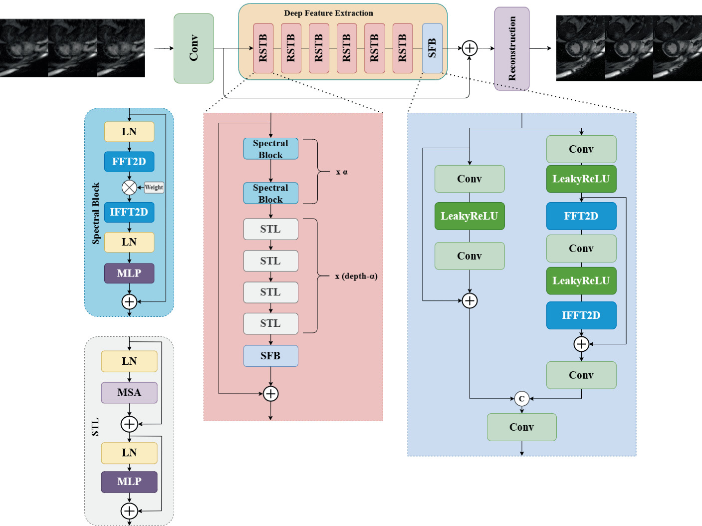

STACOM 2024 · Published 2025
A Multi-contrast Cardiac MRI Reconstruction Method Using an Advanced Unrolled Network Architecture
An unrolled reconstruction network combines information from k-space, image and temporal domains to recover multi-contrast cardiac MRI from undersampled acquisitions.
针对欠采样多对比度心脏 MRI，结合 k 空间、图像域与时间序列信息，通过展开网络完成图像重建。


Code lineage
The research workspace builds on PromptMR. The upstream framework retains its original authorship and license. The paper linked above describes this project's research.
Project resources
The project repository is being prepared. Paper links and project information are available above.